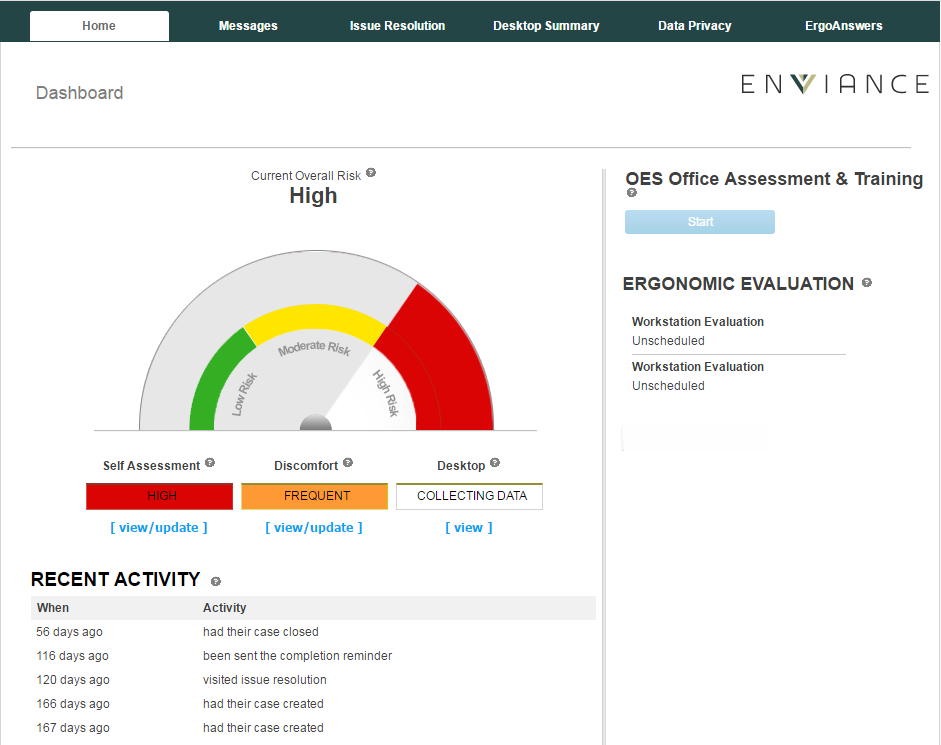

OES administrators can view a user's dashboard and dashboard details from the Employee Summary.
To view a user's dashboard:
From the Employee Summary, select the option View User's Dashboard from the menu on the left.
The user's dashboard will appear in a separate window.
The dashboard view is the same for an administrator as for the end user, but it is view only. When an Administrator views a user's dashboard, no changes will occur to the user's account and it does not affect the user activity record in the system. Specifically:
The notices on the right of the graph typically include reminders for self-assessment updates, training and evaluations. Reminders can be customized for your organization's needs,

The tab menu at the top includes several default tabs. Up to four custom tabs may be added with custom content designed for your organization's needs.
Home: The default tab is the view of the User's Dashboard with the Current Overall Risk graph, and it may optionally include Recent Activity.
Messages: Displays a list of all the user's emails sent via the OES system.
Issue Resolution: Shows user's To-Do List, resulting from self-assessments or ergonomic evaluations.
Desktop Summary: The Desktop Summary tab is shown for organizations that are using RSIGuard. It is the same view presented to the end user.
Optional tabs:
My Team: Shows an action report from RSIGuard for managers, with data for the users who report to them, directly or indirectly, in the management hierarchy. May be enabled for customers on request.
Custom Tabs: Custom tabs can be designed to accommodate customer-specific information. Data Privacy and ErgoAnswers (seen in the screenshot above) are examples of custom tabs.